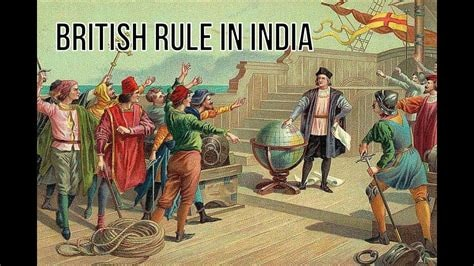

Historical Timeline

1459
Rao Jodha, the chief of the Rathore clan, founded the city of Jodhpur. The city was strategically located on a rocky hill, which offered a natural defense and control over the trade routes. Rao Jodha's decision to build Mehrangarh Fort on this hill ensured the city's dominance and security. The fort became the center of administration and power, reflecting the architectural prowess of the Rathore dynasty.
1473
Rao Jodha's successor, Rao Sardar, completed the construction of the Mehrangarh Fort. During his reign, the fort was expanded to accommodate the growing needs of the city. This period saw significant development in Jodhpur, including the establishment of markets and the enhancement of the city's fortifications.

1679
The Jaswant Thada, a beautiful marble cenotaph, was completed under the reign of Maharaja Jaswant Singh II. Built as a memorial for his father, Maharaja Jaswant Singh I, the cenotaph is an architectural marvel with intricately carved marble and serene gardens, showcasing the grandeur and craftsmanship of the period.

1818
In this year, the British East India Company signed a treaty with the Jodhpur state, establishing Jodhpur as a princely state under British protection. This period marked a significant shift in the city's administration, with the British influence shaping the region's political and economic landscape.